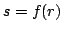

Usage
binarySearch(s, f, a, b)
Signature
binarySearch: (S, R S, R, R)
| Parameter | Type | Description |
|---|---|---|
| s | S | The value to search for |
| f | R |
A monotonic increasing function |
| a | R | The left end of the interval to search |
| b | R | The right end of the interval to search |
Returns
Returns (found?, r) such that  if found? is true. Otherwise, found? is false and: